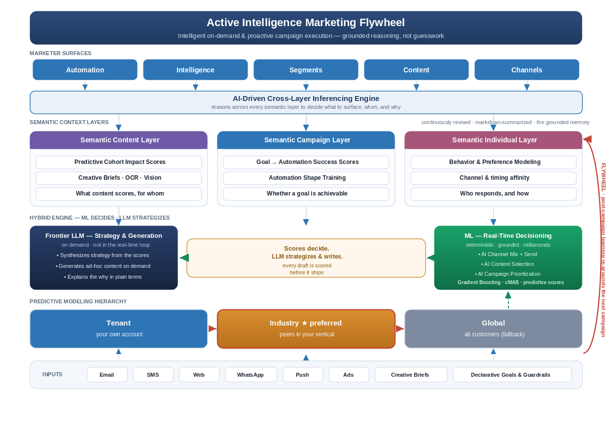

<!DOCTYPE html>
<html lang="en">
<head>
<meta charset="UTF-8">
<meta name="viewport" content="width=device-width, initial-scale=1.0">
<title>Active Intelligence — About this prototype</title>
<link rel="stylesheet" href="assets/app.css">
</head>
<body data-page="about" data-title="About this prototype">
<script src="assets/data.js"></script>
<script src="assets/shell.js"></script>
<script>
function render(view){
  view.innerHTML = `
  <div class="about">
    <span class="badge2">Interactive prototype · Active Intelligence</span>
    <h1>Grounded reasoning, shown inside the product</h1>
    <p class="lede">This prototype makes one idea tangible: marketing AI is trustworthy only when <b>scoring models ground the language model</b>. Every recommendation here traces to a performance score across three semantic context layers — not a generic web best-practice.</p>

    <div class="figure">
      
      <div class="figcap">The architecture this prototype surfaces: marketer surfaces → cross-layer inferencing → three semantic layers → hybrid LLM×ML where scores ground the reasoning → tenant/industry/global modeling, with the flywheel feedback loop.</div>
    </div>

    <h2>Walk the prototype</h2>
    <div class="tilewrap">
      <a class="tile" href="index.html"><div class="ti">🏠</div><h3>Home · Proactive campaigns</h3><p>Campaigns the agent surfaces from telemetry, each grounded by semantic-layer scores. Open “Why this?” for the evidence.</p><span class="go">Open home →</span></a>
      <a class="tile" href="builder.html?id=c1"><div class="ti">🚀</div><h3>Review &amp; launch</h3><p>The grounded campaign pre-filled — goal, cohort, channel mix, creative — with the reasoning panel beside it. Launching closes the flywheel.</p><span class="go">Open builder →</span></a>
      <a class="tile" href="reports.html"><div class="ti">📊</div><h3>Active Intelligence report</h3><p>A freeform AI overview that drills into the Content, Campaign, and Individual layers, exposing the model evidence behind each number.</p><span class="go">Open report →</span></a>
      <a class="tile" href="automations.html"><div class="ti">✦</div><h3>Automate for me</h3><p>The agent drafts a multi-step retention journey where every node is tied to a layer score and a model tier.</p><span class="go">Open automations →</span></a>
    </div>

    <h2>Try the role switch &amp; notifications</h2>
    <p>Use the <b>role switch</b> (top-right: Marketing Mgr / Executive / Analyst) — it re-frames the home feed and the <b>notification bell</b> for each audience. The Executive view adds a portfolio revenue card; the Analyst view foregrounds model tiers and scores. Your choice persists as you move between pages.</p>

    <h2>The strategy behind it</h2>
    <ul class="linklist">
      <li>📄 <a href="../Active_Intelligence_Strategic_Blueprint_v2.docx">Strategic Blueprint v2 (Word)</a> <span class="lt">— full memo with the semantic-layer architecture</span></li>
      <li>🖼️ <a href="../Active_Intelligence_Architecture.png">Architecture diagram (PNG)</a> <span class="lt">— the revised block diagram</span></li>
    </ul>
    <p class="lt" style="font-size:12px;color:#94a3b8">Strategy links open the files in the repository root and work once the repo is published.</p>

    <div class="disclaimer"><b>About the data:</b> scores, lifts, cohort sizes, and dollar figures are illustrative — crafted to make the grounding story legible, not produced by a live model. The point of the prototype is the <i>shape</i> of the experience: proactive, explained, and grounded.</div>
  </div>`;
}
Shell.mount(render);
</script>
<script src="assets/tour.js"></script>
</body>
</html>
